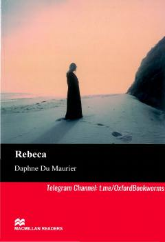

RSirli o'tmish va psixologik dramaga boy klassik ingliz romani.
Yosh ayol boy va sirli Maxim de Winterga turmushga chiqib, uning Manderley nomli ulkan qarorgohiga ko'chib o'tadi. U yerda u marhum rafiqasi Rebekkaning soyasi va uy bekasi xonim Danversning sovuq munosabati bilan kurashishga majbur bo'ladi. Bu asar sirli o'tmish va psixologik dramaga boy klassik roman hisoblanadi.